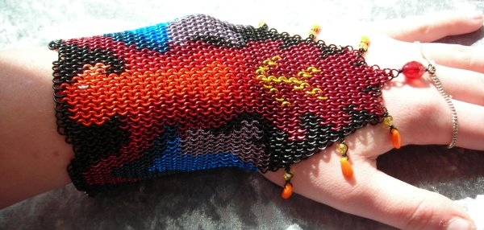
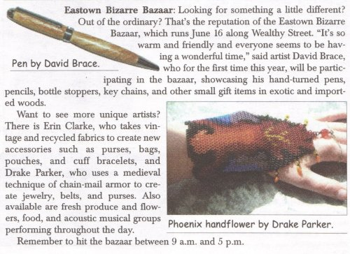
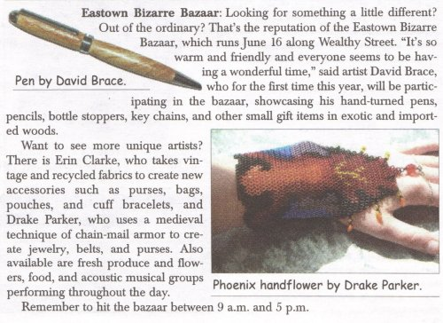

Phoenix Inlay Handflower
This served as my entry into the second-ever M.A.I.L. theme contest,
"Mythical Creatures." There were a total of four
entries, and this one tied for first with sakredchao's Balrog
sculpture.
I spent about a week fiddling around with the basic image before I was happy enough to start weaving it. Here is the image that I ended up using:
I spent about a week fiddling around with the basic image before I was happy enough to start weaving it. Here is the image that I ended up using:
Rings:
20 ga 7/64" ID
Enameled Copper in Black, Burgundy, Red, Silvered-Tangerine, S-Peach, S-Lemon, Navy Blue, S-Blue, and S-Amethyst.
European 4:1 weave
I also used this piece as an entry photo for one of my annual shows, the Eastown Bizarre Bazaar. They liked it enough to give me a mention in their publicity blurb, in On-the-Town magazine:

(Baily, Joanne N. "To the Market We Go." On-the-Town June 2007: 28)
Enameled Copper in Black, Burgundy, Red, Silvered-Tangerine, S-Peach, S-Lemon, Navy Blue, S-Blue, and S-Amethyst.
European 4:1 weave
I also used this piece as an entry photo for one of my annual shows, the Eastown Bizarre Bazaar. They liked it enough to give me a mention in their publicity blurb, in On-the-Town magazine:

(Baily, Joanne N. "To the Market We Go." On-the-Town June 2007: 28)